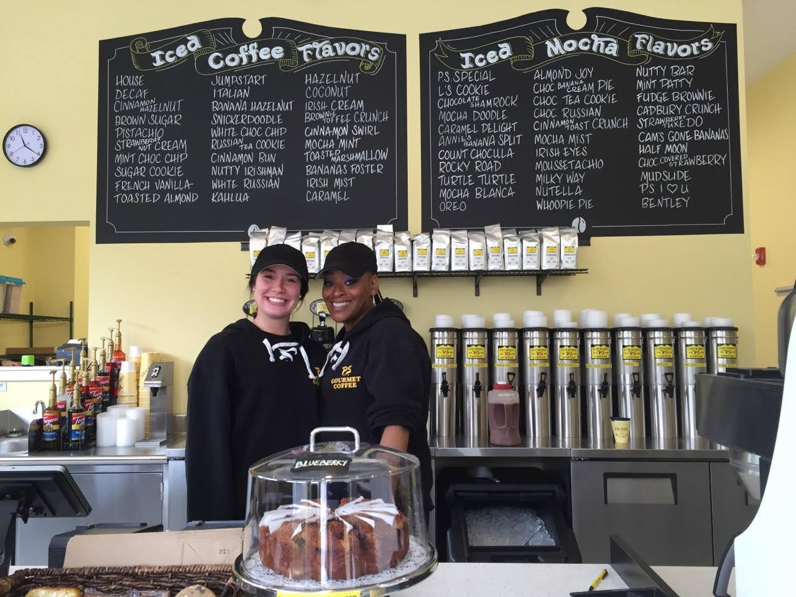
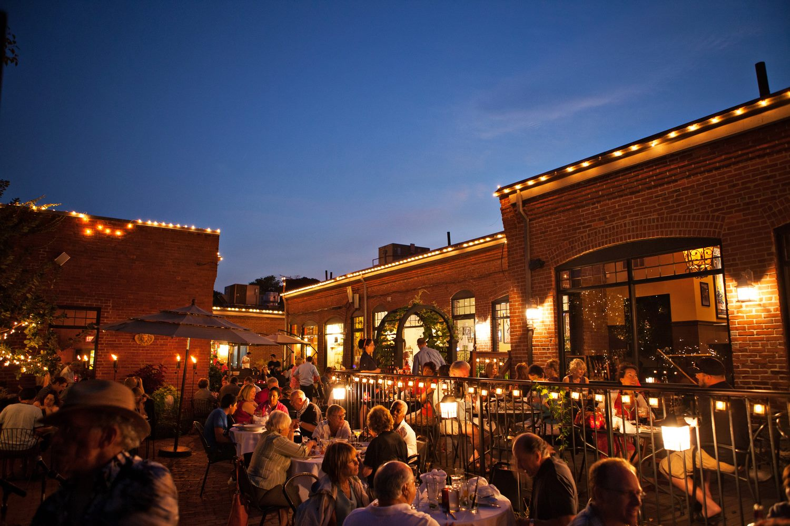
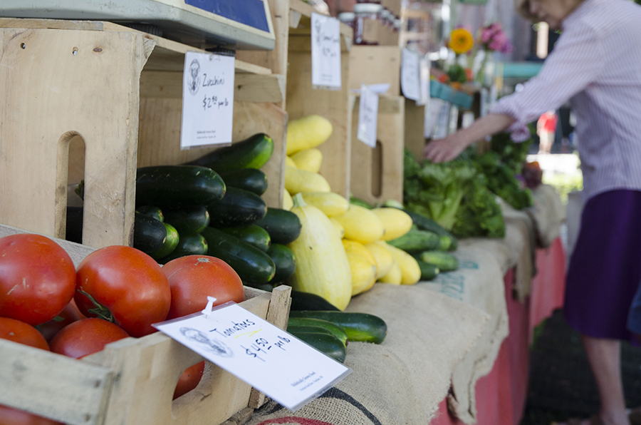

Stay connected With Roslindale Village Main Street (RVMS). Keep up to date with neighborhood news, find out how to contribute to the economic vitality and growth of Roslindale Village, and see how we're bringing more people into the Square. We look forward to connecting with you!
What We Offer

small business resources
RVMS works to help business owners receive on-site technical assistance from the City of Boston. We also promote our district's current businesses in our newsletter and throughout our social media outlets. Here you will find links to services offered for free through the City of Boston as well as other helpful documents about starting or maintaining your business in Roslindale Village.

get involved
Throughout the year, RVMS staff and volunteers collaborate to organize community events, placemaking initiatives, and other neighborhood projects. We are always looking for Rozzidents to help us make the Village a vibrant place to live, shop, and play.

farmers market
The Farmers Market takes place in Adams Park rain or shine every Saturday from 9:00am to 1:30pm, featuring free live music and children's entertainment. Kicking off in June, our market runs through the Saturday in before Thanksgiving. Additionally, we run a Winter Market at the Sons of Italy Hall from January through March (10:00am to 2:00pm).
We Cannot Do It Without You
For over 30 years, RVMS has counted on donations from residents like you as we work hand-in-hand with businesses, community leaders, and elected officials to revitalize Roslindale Village. What does 30 years of revitalization look like? It looks like a neighborhood that's a destination for dining, both casual and gourmet. It looks like beautiful public spaces for people to gather, from Adams Park to the Cohasset Street Parklet. It looks like a place to raise a family and start a business. It looks like the Roslindale we built together.
A very Special thanks to our major funders, sponsors, and co-sponsors: